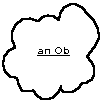
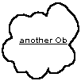
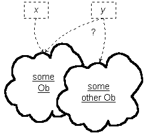
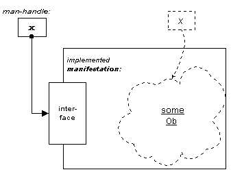
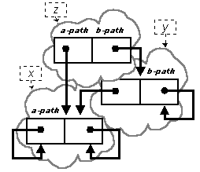

Here is a sketch of the foundation for any (and every) Miser system. This is the oMiser level because it covers the elementary, ‹ob› structure only. It is devoted exclusively to Obs, seemingly alone in a world unto themselves. This simple, closed structure is at the foundation of all extensions that are introduced to achieve "higher" levels.
oMiser and ‹ob› provide a rich yet spare environment. oMiser is the launchpad for distinguishing how much we rely on the familiar and how much is overlooked in our everyday approach to computation, theories, logic, mathematics and especially to language itself.
NOTE: Although I have recently touched-up this file, it remains only slightly different from Version 0.04. Some changes will make 0.05 incompatible with 0.04. The next steps are to create a job jar for this work, in some suitable location, perhaps the Projects folder and the component folders, and bring this entire site up to consistency with current nfoCentrale.net conventions for management of the material. The idea is to do this on an opportunistic basis, and starting in the sketch and notes sections seems the most important right now. I will consider moving some of these notes pages into the sketch section so that they are co-located conveniently. (This allows nicer shortcuts and easier archiving of the set of materials. Maybe.) Anyhow, more to think about. Some of it is housekeeping, then there is more to do to organize this material and also populate related sections. -- dh:2003-12-09]
Content
[TYPOGRAPHY WARNING: This document uses HTML entities for special characters, such as ¶ and similar symbols. Most of them will render properly in all current browsers. However, some character, such as ¹ (not-equal from the Symbol font) and ‹ (left-pointing-single-guillamet from the Windows font) may not render well at all. It is the intention to use Unicode for this and related pages, and also use MathML styles. That has not been done and you may have difficulty rendering the present form of this document as intended. -- dh:2002-07-05] I now have an experimental UTF-8 version and am not clear why things are working, if they are. Keep looking. dh:2002-07-15
We want to put something up top about what we are doing here, and the viewpoint that we want to encourage. [These are some loose notes until there is more structure. -- dh:2002-07-03]
This sketch is designed for people having some comfort with basic mathematical forms, identities, and elementary logic. It also, especially in early drafts, appeals to technical knowledge as already-established, even though a careful approach -- the intended target -- would lay out precisely what those presuppositions are, the claims made about the technical results, and how they are substantiated. The early sketch is laced with placeholders for what needs to be provided to accomplish that.
In many places there are references to conventional models of computation and aspects of the computational systems that are in every-day use. This discussion of internal mechanisms may be familiar to many, including experienced computer programmers, and it will be impenetrable to others, including experienced computer programmers who are unfamiliar with the internal architectures of the systems that they use. In short, there will be something incomplete and disruptive for everyone who digs into this sketch. A certain amount is unavoidable. I will endeavor to arrive at just that amount and no less.
The oMiser system and its theoretical basis is also intended to be accessible (not necessarily appealing) to people who now have a basic knowledge of the workings of computers and who have some familiarity with the architectures of different programming systems. It is not necessary to be a computer programmer to appreciate this exploration. However, computer software developers and especially system designers are an important body in the intended audience for this work. As the sketch matures, I will make this less intrusive and strip out the jargon and dependence on craft knowledge to places where it is essential only if one chooses to dig deeper into the technical lore around creating and using an operational realization of oMiser. Likewise, there may be parts of the theoretical development that is not that interesting to practitioners. I propose to use mileposts that indicate where readers intent on a particular cut of the material may make detours, perhaps noticing a vista that is worthy of return at a later time for a better view.
There are sidebars and typographical cues to aid in navigation through areas that depend on knowledge that you might not possess or that is presupposed and that you might desire further information about -- or simply want to skip over and see what else the sketch has to offer at a more-cursory level. Either way is meant to work.
-- Dennis E. Hamilton
Seattle, Washington
2002 July 12
[OK, I get to renumber everything and put in this important preliminary. Also, some prefatory material before this section is also useful, more about the content than what's up there right now. -- dh:2002-07-12]
[I want a picture or diagram about the relationship of theories and interpretations to pave our way here. The key thing is that reasoning and deduction in the theory gives us some power regarding the interpretation. I keep wanting to do it later, but it seems that some initial depiction is necessary to build on as we acquire more theoretical content. -- dh:2002-07-05.]
[The idea is that what we are doing here is about theories and theorizing. The basic perspective is about how we use theories to give us access to something unseen of itself, gain mastery over that domain, and then project what we accomplish onto the world, or a reasonable approximation thereto. Basically, I want to introduce theories as a way of viewing and conceptualizing and then consider formalization as a way of preserving that abstracted view and the order that is essential to it. (Well, try again then because this is really foggy.) Draw the pictures first, it always work better that way. -- dh:2002-07-12]
[This section is a bit of theorizing about theorizing. The key idea is that, whatever route we took to the development of formal axiomatic systems, and however we learned about them in our own studies, it is now possible to take the theory as a place from which to start, now considering what the valid interpretations of such a theory might or can be. The idea is that, given a (formal) theory, we can separate the essentials of the theory from the interpretations of that theory, and consider what it gives us in rigorously addressing the validity of one interpretation, the relationship of different valid interpretations to each other, via the theory, and so on. Since I have an interpretation, or family of interpretations in mind, as might any scientist when formulating a theory, I also get to tweak the theory when it is not as expressive or when it commits me to too much or too little concerning the intended interpretation. This dance will always keep coming back to the theory as a way of saying what is essential about the interpretations that are the subject of theoretical application. -- dh:2002-07-16]
[We could also say that we are putting theory making on an empirical basis, at least as far as computation is concerned. In a way, I am out to give computation theory an empirical basis in an appropriately-manifest computational model. -- dh:2002-07-16]
Two ways we want to look at Obs and the basic provisions of the Miser system.
We have a computer implementation in mind. But it is abstracted. Still a computer implementation, but not a fixed implementation. So I will illustrate the computational nature of Miser by informal means: diagrams, descriptions of behavior of a computer, and so on.
At the same time, there is also a theoretical system, a mathematical structure, that the computational system honors in a particular way.
I will give informal characterizations of the computational system, using diagrams that are to be suggestive of valid interpretations of the theory.
I will also give informal expression to the theoretical system of which the computational system is to be a valid interpretation.
This illustrates how these two views can be brought together in demonstration of what it means to manifest abstractions (theoretical entities) by computational means. This sets the stage for a rigorously developed manifestation in operational computer software and for a formally developed exploration of the theoretical system that is its foundation.
It is important to notice that the theory is being developed with a computational interpretation in mind. I am interested in the operational capabilities of the kind of system that I envision, while at the same time the development of a theoretical system sharpens understanding and also provides a venue for exploring the way that theory and reality can be said to collide in the computer. The egg and the chicken have no existence apart.
[This is turning into a hodgepodge of mixed levels of description and incoherently-connected concepts. It will be like that until some organization emerges where I can put the less-essential but later-significant material off to the side. Meanwhile I do this to gather my forces and ensure that the sketch that is distilled out remains consistent with what is to follow or expand on it. I will also begin separating the sketch into multiple web pages, probably on a major section basis, as those sections become complete enough to move onto pages of their own. The sketch will have a drill-down quality to it. -- dh:2002-07-05]
I will define some simple notations and some theory symbology here, pointing out that it is all right that it is unfamiliar. Most of the definitions and reasoning given here is done in a way where you can pick up what you need as we go. It will be useful to refer to the notation section from time to time as a refresher on how you have seen the notation be used. -- dh:2002-07-12
We mean by this that Obs are sufficient. In principle, we don't need anything more to provide a universal system of computation. It is neither practical nor desirable to limit ourselves this way. We start here because this is the place where we can reveal exactly what is involved in manifesting anything via computation and then what is or is not remarkable by extensions that deliver computation on more-familiar terms that, nevertheless, preserve Obs and their power.
|
Here it is argued that comparison, knowledge of existence, and understanding of number, are essential to knowledge, but cannot be included in perception since they are not affected through any sense organ. |
-- Bertrand Russell on Knowledge and Perception in Plato.
[This section provides a basic flavor of the approach and how we will toggle between several perspectives, always endeavoring to keep them distinct. -- dh:2002-07-03]
The structure, ‹ob› = ‹Ob, Of, Ot› consists of
a collection, Ob, of elements (the individual Obs),
a collection, Of, of functions over Ob
and a (semi-) formal applied-logical system, Ot, with initial axioms that provides everything and only what there is to be (semi-) formally known about ‹ob›.
We are intentionally allowing ourselves to be obtuse about Ot and whether it is properly in or of the structure ‹ob›. We are not even clear on what it means to say that ‹ob› is a "structure." We will leave it that way for now and tidy up later.
Something to deal with almost immediately is having it be clear when we are talking in our own language about the structure ‹ob›, and when we are somehow speaking within the structure ‹ob›, and if it even makes sense to consider that one can speak that way.
Keeping track of the multiple levels of language (our language, the metalanguage, the formal language, etc.) is important because we will identify features of ‹ob› that are themselves linguistic in character. For now, this is just something to notice that may not always be obvious. We'll improve on that as we go.
There are Obs. That's all we know for now. Don't assume anything. And don't confuse the notion of Obs with anything that you might already know about objects or "objects" or object-oriented programming or anything else. We'll look for prospective connections later. Consider that, with oMiser, Obs have no relationship to classes and objects the way they are spoken of by software developers. Although a relationship to classes and sets in logic and mathematics is inescapable, I ask you to set that aside too. We'll put it in later.

For now, there is very little to know about Obs. They are some kind of abstraction. We will indicate how little we know by depicting an arbitrary Ob as a cloud-like entity.It is fundamental that there appear be many Obs -- an unlimited number, actually -- and however they come to

our attention, they are distinguished in some way. When the same Ob comes to our attention in more than one way, it is always recognizable as the same Ob. That's an essential quality for all interpretations that we want to allow.This conception is reflected in the theory by the rules for identity and distinction. It is not a complete formulation and we will ultimately give this topic much closer scrutiny.
I said, "There are Obs," as if Obs are. It is a way of speaking. It is not that Obs are real or that ‹ob› can be found somewhere in physical reality. It is more like, "consider that there are Obs." There is no commitment other than to give Obs a kind of theoretical standing, to speak theoretically. Later, when we have more foundation under our belts, we can look to see in what ways, if any, Obs may be "more real" than that.
There are no Obs except in this intangible sense in which we speak as if they are. The theory gives us a way of speaking correctly about Obs (since there is no way other than speaking -- including reading and writing -- that we have for mutually envisioning what their characteristics are, even conceptually), and we will use the language of theorizing just that way, in speaking of ‹ob› and the qualities of Obs.
[I have specifically omitted demonstration with a computer as a way of speaking about or conveying something about ‹ob›. This is worthy of a note, at some point. I intend to address that case, but I am not prepared to claim it just yet. -- dh:2002-07-05]
Speaking of ‹ob› and the Obs is to be taken as an act of invention, even though we use the language of description. The descriptions are free creations, yet they are not arbitrary. There is a logic to them. We use the notations and concepts of mathematics and logic to provide consistency in our speaking of Obs and ‹ob›. That consistency stems from our fundamental premise: ‹ob› is lawful. That is to say, we assert that ‹ob› is lawful, and that the rules of logic apply and prevail. That is a rule of the game of ‹ob›. As the author (and referee) of the game, I'm giving that to you as the rule. If we find that there is something inconsistent in the descriptions that are made, it is an error in the descriptions and conceptualizations, not in the fundamental premise. No mischief is permitted in that regard. Any mistakes that violate that condition will be repaired and the premise restored. That's the nature of the game. It may turn out that this is a game we cannot win. We will only know through the faithful playing of it.
We are learning to speak using the language of logical theories. Our demands on logic are simple at the beginning and we will start out with informal and familiar styles of equations.
Let us begin with the first layer above the fundamental premise: that of identity and distinction. We will pay more attention to the conceptualization and the formalization of existence after that.
One thing to pick up on later is that it is the structure that is the "whole" and when we have our attention on individuals, speaking conceptually or in the language of the theory, that should be taken as a way of viewing aspects of the whole. Although we speak of individuation, and might speak of Ob as a set, it is not that Obs (that is, the members of the conceptual set, Ob) are independent entities. The obs are interdependent and inextricable with the structure, ‹ob›. Everything else is a difficulty of language. Quote [Quine1969].
Consider an arbitrary integer, p. For example, q.
-- told to me in the 60s by one of my many language-loving friends
2.1.3.1 There is an identity relationship among the Obs We borrow the common symbol "=" for the relationship of Ob identity.

We will use the symbol in a way that makes it clear when we are referring to Obs and when we might be referring to something else where a similar notion of identity might apply.2.1.3.2 The intended interpretation of x = y is that Ob x is Ob y.
2.1.3.3 Identity Reflexivity. If x is an Ob, x = x.
2.1.3.4 Identity Symmetry. For any Obs x and y, if x = y, then y = x.
2.1.3.5 Identity Transitivity. For any Obs x, y and z, if x = y and y = z, then x = z.
2.1.3.6 Identity Distinction. x ¹ y is equivalent to ¬(x = y) by definition, where "¬p" signifies "not p." The intended interpretation of x ¹ y is that Ob x is not Ob y, which is to say that Ob x and Ob y are distinct.
2.1.3.7 Identity Completeness. For any Obs x and y, it is the case that x = y or x ¹ y.
2.1.3.8 Identity Consistency. For any Obs x and y, it is the case that ¬(x = y and x ¹ y).
2.1.3.9 The identity-completeness and identity-consistency conditions place a strong requirement on any valid interpretation of ‹ob›, and are part of the assurance of a sound computational manifestation for Obs. It is usual to place/demonstrate these conditions at the level of (or about) the overall theory itself. Whether or not we will do so, the conditions are established for identity of Obs. [Find a better term if "sound" is inappropriate or misleading here. Also, look at what it is to assert consistency and completeness in this way as statements of ‹ob› theory, Ot. Finally, De Morgan's theorem establishes that the proposition of Identity Completeness and Identity Consistency are equivalent. How about them apples? -- dh:2002-07-12]
2.1.3.10 Consequences of Formality. Here we begin to see the consequences of formal expression of a theory. Notice that the characteristics of identity (as given by the axioms for reflexivity, symmetry, and transitivity), used in some form since the time of Euclid, would be ridiculous if we were speaking of definite, determined things. In that case, identity and distinctness are confirmable in our experience or by some empirical inspection or confirmation. A statement such as x = x would then seem unnecessary or, at best, trivial. It does so because we are already interpreting the statement, which is actually a formal one. That is, the statement of identity reflexivity is saying what can be formally established about use of "=" as if there is no existing interpretation. That, in our natural interpretations of identity the statement appears obvious is simply confirming that the formal has captured our sense of identity and affirmed that it applies in ‹ob›.
[Put in that we are beginning to describe appropriate inferences among formal expressions. An appropriate reading of x = x, for example, is that any any form of this pattern where x is some formula for an Ob is to always be true in the theory. The axiom of identity reflexivity, for example, is required because it actually arises in chains of inference about the identity of Obs. So the obvious needs to be made explicit. More significantly, this simple condition is often violated in computational systems. That is, we use expressions for computation for which identity reflexivity fails, yet we reason about computations as if it doesn't. It is my profound desire to avoid that nonsense and, indeed, demonstrate that there is no reason to tolerate it. We will produce far superior and reliable computational results as a consequence. --dh:2002-07-05]
There is another (preferable) way to look at these axioms. Recall that in the intended interpretation, we know certain things about the identity of objects (Obs or other kinds). But the formal theory has no fixed interpretation beyond what is established by the system of logic and the axioms introduced for the application, ‹ob›. So until we say, symbolically, what we intend for the identity relationship, there is no formalization with which to infer identity and for which the valid interpretations support that notion of identity. -- dh:2002-07-11
Finally, I note that I have not made any sort of well-formedness observation at this point, nor am I saying anything about propositions involving "equals." I don't see any need to do that at this point. -- dh:2002-07-12
2.1.4.1 We use x ¶ y to signify an ordering relationship among the Obs. The intended reading of x ¶ y is that Ob x is prior to Ob y. An important consequence is that if x ¶ y, then Ob x must be distinct from Ob y.
2.1.4.2 ¶-Irreflexivity. For any Ob x, ¬(x ¶ x).
2.1.4.3 ¶-Asymmetry. For Ob x and Ob y, if x ¶ y, then ¬(y ¶ x).
2.1.4.4 ¶-Transitivity. For Ob x, Ob y, and Ob z, if x ¶ y and y ¶ z, then x ¶ z.
2.1.4.5 ¶-Distinctness. For Ob x and Ob y, if x ¶ y, then x ¹ y.
2.1.4.6 ¶ and Identity Distinctness. For any Obs x and y, it is the case that
x = y if and only if ¬(x ¶ y or y ¶ x).
This is an unusual notion of distinctness. Definition of Identity Distinction provides the usual notion, where distinctness is merely x ¹ y with it then becoming possible to infer more cases as constants, functions, and axioms about them are introduced.
[Introduce something about the difficulty of inference, and illustrate the kinds of inference we can make in this case. This is definitely the case of having a particular computational/constructive interpretation in mind. Maybe something about applied (equational) logic.]
The relationship x ¶ y has no intended interpretation, and we will actually avoid establishing one in the computational manifestation of Obs. Its function is to express, within ‹ob›, a basis for differentiation of Obs. In particular, as we will establish in the following sections, if there are any Obs, there are many Obs, and they are differentiated. This will be particularly important as we introduce constants for specific Obs, known as individuals, and require that these individuals be distinct.
This is a partial-ordering and it is sufficient (I claim) to establish the constructivity of ‹ob›. -- dh:2002-07-16. There will be a couple of other ways, such as by establishing a grammar for canonical Obs, taken up as we move along. -- dh:2002-07-16
At some point we will explain why we do not want to assert a specific x ¶ y, because we don't want to enforce it globally. In the computational manifestation of Obs, it is sufficient for every point of manifestion to behave as if there is an x ¶ y and that the distinctness deduced with it is honored. But so long as we have distinctness as a direct condition (which we will), that is all that is required.
[Rework this part to have it that manifestations are erected and discarded as part of computations, but it is as if ‹ob› is always there. The manifestations preserve this illusion. Also, make it simpler and not so heavy. Finally, point out that it is an oMiser software library that provides the necessary manifestation. Later, we will even consider that, among all computers on which some manifestations of ‹ob› are realized, there is every indication that it is the one and only ‹ob› structure anywhere. We get to look at the Platonic illusion. This may belong in separate notes, but I want to remind myself to keep my use of language consistent with that prospect.]

Obs will be represented in the processes of conventional digital computers. This is accomplished by organization of computer memory and software in such a way that Obs are manifest in the operation of the digital computer.Manifestations are established using oMiser software libraries provided for use by computer programs on a variety of different computer systems. The library procedures deliver interfaces to manifestations of Obs. The operations available at the interfaces behave is as if the Obs are actually present somewhere "behind" the interfaces of the manifestations. The manifestations operate successfully as representatives of the Obs in the processing environment of the conventional computer system.
In the implementation of oMiser, the manifestations are delivered to other software by the oMiser library procedures. It is done in such a way that the manifestation is successful and the developers of the other software can trust in that fact. There is also a software program, oFrugal, that uses the oMiser library and delivers access to ‹ob› (as manifested) by interaction with the computer's user or operator. We will see below (section ???) that this is yet-another-manifestation and that it confronts us with the formal nature of computer operation at the boundary between computer interface and human operator.
In the delivery of manifestations within the common computational model, a computer storage location typically serves as a placeholder for a manifestation. The storage holds a man-handle of some kind. The man-handle serves to locate a particular manifestation (interface). Man-handle storage elements are the means to keeping track of the Ob manifestations that a computer program is accessing.
In an operating computer system, different man-handle storage might refer to the same manifestation interface. Different interfaces might provide manifestation of the same Ob. The form of identity maintained for computer storage, interfaces, and handles to interfaces is generally independent of the identity and distinction among the manifest Obs -- there are different worlds or domains involved.
Part of a particular manifestation methodology is provision of an oracle that can confirm whether the manifestations accessible through two manifestation interfaces or two man-handles are for manifestations of the same Ob or not. oMiser provides such an oracle. That is, the identity of the manifest Obs is always determined. [Watch that language.]
The possession of a valid man-handle to a manifestation interface establishes the (virtual) presence of the particular manifest Ob. Obs (may) have persistence beyond the existence of any manifestation and can reoccur as the Obs of subsequent manifestations. When we have a man-handle, we say that the Ob is determined. Much of what we say about the computational model revolves around an Ob being determined. There are operations that one can carry out with manifestations where an Ob cannot be determined, and no result is delivered. That is to say, oMiser never delivers a man-handle for a seeming manifestation that has no determined Ob. It just doesn't happen. We will discuss later what happens instead, if anything.
We will again discuss the notion of determined Obs when we look at computability of the functions, Of. It will be important to make this a very sharp notion. Until then, we entertain the idea of a determined Ob in an informal way.
At this point, you might say that the software that provides for manifestation of Obs is successful at perpetuating the illusion that there is an Ob "there, somewhere," simply by ensuring that no behavior can be elicited that would contradict that illusion.
One might also say that there is a valid interpretation of ‹ob› in the operational behavior of the oMiser computer software.
One could also say that oMiser represents ‹ob› in the computational model of the computer system.
We will prefer to say, in the common manner of computer science, that oMiser (actually, all of the oMisers) implements or realizes (that is, manifests to some degree) ‹ob›.
These perspectives are pretty much interchangeable at this level of conceptualization. I prefer realization, with no existence commitment more than that it is indeed a successful illusion. I will also be using manifest abstraction to indicate that the manifestation is delivered in such a way that the realization is not exposed to inspection or circumvention. This kind of manifestation hides the machinery (though you and I can know about it and confirm its fidelity in providing the manifestation) from exposure to the other software that makes use of oMiser.
[We will then have an opportunity to discuss how that is trustworthy, or not, and what that might mean, or not, for the reliable use of a (suitably-extended) Miser as a basis for practical computations. But first, we want to see how much trustworthiness we can establish with an oMiser for manifestation of ‹ob›. -- dh:2002-07-16]
There are four primitive functions, ob.a, ob.b, ob.c, and ob.e that are defined for all Obs. Along with the identity relationship, these functions are sufficient, in a particular sense, for characterizing all the Obs there are. We will say more about the import of that in [section ???]
[Define the Ob ® Ob notation somewhere. -- dh:2002-07-11. Perhaps in the new section 1 -- dh:2002-07-12]. Establish that all of the functions in Of are well-defined. -- dh:2002-07-12. Also, we do not use the Cartesian product notation for binary and n-ary functions because we don't want to drag set theory into it yet.
We need to motivate the peculiar notation ob.a and also discourage people from confusing it, at this point, with notations of object-oriented programming systems.
2.2.1.1 ob.a: Ob ® Ob is in Of

.2.2.1.2 For any Ob z, ob.a(z) is defined. It is called the a-path of z.
2.2.1.3 ob.a(z) = z or ob.a(z) ¶ z.
In the diagram, ob.a(z) = x, ob.a(y)= x, and ob.a(x) = x.
2.2.2.1 ob.b: Ob ® Ob is in Of.
2.2.2.2 For any Ob z, ob.b(z), is defined. It is called the b-path of z.
2.2.2.3 ob.b(z) = z or ob.b(z) ¶ z.
In the diagram, ob.b(z) = y, ob.b(y) = y, ob.b(x) = x. Also ob.a(ob.b(z)) = x.
2.2.3.1 ob.c: (Ob, Ob) ® Ob is in Of.
2.2.3.2 For any Obs x and y, ob.c(x, y) is defined. It is called the pairing of x and y.
2.2.3.2 If z = ob.c(x, y), then ob.a(z) = x and ob.b(z) = y.
2.2.3.3 ob.c(x, y) = ob.c(m, n) if-and-only-if x = m and y = n. This is the ordered-pair condition for the equivalent set-theoretic arrangement [Quine1969]. It also establishes that two pairings are identical if and only if their respective paths are identical.
An useful interpretation of pairings is as ordered containers for two other Obs. It will be rather difficult to avoid this interpretation, even though it is all in the interpretation. See [section ???]
[I had called these the a-part and b-part until now. I abandoned that notation because it smacks of Obs being separable in some way. I am using a-path and b-path to suggest an interpretation more like moving attention within ‹ob›. It is merely interpretation, and I prefer it here as holding onto the integrity of the overall theoretical structure. -- dh:2002-07-16]
2.2.3.4 z = ob.c(x, y), then x ¶ z and y ¶ z. This is the Ob-constructivity condition with respect to ob.c.
2.2.3.5 We define is-pairing(z) as equivalent to ob.a(z) ¹ z and ob.b(z) ¹ z
2.2.3.6 For any Ob z, z = ob.c(ob.a(z), ob.b(z)) if and only if is-pairing(z).
In the diagram, z = ob.c(x, y) and is-pairing(z).
2.2.4.1 If ob.a(z) = z, then ob.b(z) = z. This is an axiom of Ot.
2.2.4.2 An Ob z for which ob.a(z) = z is known as an individual.
2.2.4.3 We define is-individual(z) to be equivalent to ob.a(z) = z.
In the diagram, is-individual(x) and is-individual(ob.a(ob.b(z)).
2.2.4.4 An useful interpretation of individuals is that they are the fundamental building blocks of all Obs. At the "bottom" of every Ob, by any path that is taken, there are individuals.
[Note that we have enough to tell, in the theory, that we have an individual, but if there is more than one of them, this is not enough to tell us which individual we have our attention on. We handle this with ¶ as a way to express, in this applied theory, that the constants we use are for individuals and they are for different individuals. -- dh:2002-07-08]
2.2.5.1 ob.e: Ob ® Ob is in Of
2.2.5.2 ob.e(z), for any Ob z, is called the enclosure of z.
2.2.5.3 If z = ob.e(x), then ob.a(z) = x and ob.b(z) = z.
2.2.5.4 ob.e(x) = ob.e(m) if-and-only-if x = m.
2.2.5.5 If z = ob.e(x), then x ¶ z.
2.2.5.6 We define is-enclosure(z) as equivalent to ob.a(z) ¹ z and ob.b(z) = z.
2.2.5.7 For any Ob z, z = ob.e(ob.a(z)) if and only if is-enclosure(z).
In the diagram, y = ob.e(x), is-enclosure(y), and z = ob.c(x, ob.e(x)).
An useful interpretation of enclosures is as a container for another Ob, ob.a(z), that can be taken as akin to an individual. That is, enclosures have qualities of individuals and of composed Obs.
[Please note that this is (merely) an useful interpretation. The theory says nothing about this, just that enclosures are distinct from pairings and individuals and that this is discernable for any Ob more-or-less by inspection, if we interpret ob.a and ob.b as functions that look "into" Obs. We will see that this and the idea of singletons become idioms in the computational manifestation of Obs and in the computational model given by the functions ob.ap and ob.ev introduced below. -- dh:2002-07-12 and 2002-07-16]
2.2.6.1 Three Kinds. The intention is to limit Obs to three kinds -- individuals, enclosures, and pairs -- based on whether ob.a(z) and ob.b(z) are the same as z or different.
2.2.6.2 Two More Flavors. We also refer to the combined case of enclosures and individuals as singletons and the combined case of pairs and enclosures as composites:
2.2.6.3 Singletons. We define
is-singleton(z) as equivalent to z = ob.b(z),
2.2.6.4 Composites. We define
is-composite(z) as equivalent to z ¹ ob.a(z).
2.2.6.5 Why?
There are advantages to floating systems in computational settings. That is, having it be that there is no way to "fall out" of the system, or to expose an undefined case is extremely useful in the performance of elementary computational operations. For example, in ‹ob›, the sequence ob.b(ob.b(ob.b(z))) is defined for any Ob z. This means there is nothing that one has to check for to ensure that the expression is valid. This makes for great economy and simplicity in computational realizations.
This simplicity also provides for certain idiomatic realizations of other useful abstractions, such as numbers, lists of elements, formulae, and more complex abstractions. The flavors of Ob were designed with the idea of being useful in such intended applications.
However, apart from having individuals be the floor on which ‹ob› floats, and having pairings, the rest is arbitrary and could have been altogether or done differently. If I wanted to speak of a family of oMisers or of ‹ob› theories, we could do that. I am providing specific cases here because the intention is that they be known and preserved in perpetuity, arbitrariness included. In this regard, ‹ob› is a specific applied theory. I want to reason about that application (the intended interpretation), so these little facts go into ‹ob›.
[This is a place for a "designer note," and perhaps a simple realization of Obs in the MIX computer. [Knuth1997: MIX computer section.]. The use of a C Language struct would also be useful. This should be in a companion page, with a sidebar that links to it from here. -- dh:2002-07-16]
2.3.1.1 For Obs x and y, if is-individual(x) and is-composite(y), then x ¶ y.
2.3.1.2 This is an arbitrary condition. It servers to partition the collection of Obs between individuals and everything else. That is just another way of saying that the individuals are different from everything else, in some way. One way that individuals are different is that I cannot tell, by structure alone (that is, exploring the a-path and b-path) whether two individuals are the same or different. I need some other basis for discrimination.
2.3.2.1 ob-NULL is an Ob.
2.3.2.2 is-individual(ob-NULL).
We use special sans-serif, small-caps typography, as in "ob-NULL" to specify constants in Ot that signify specific, distinct individuals. It is possible to simply say that they are distinct because the names we use in talking about them are distinct. That extra-theoretical device is not necessary. We can have them be distinct in the theory by making arbitrary but useful stipulations about their relationships to each other.
2.3.2.3 For any Ob x, if is-individual(x), then x = ob-NULL or x ¶ ob-NULL.
This is, again, one of those arbitrary but very useful conditions. One reading is that there is at least one individual in Ob. Also, it is easy to introduce constants for additional Obs by using axioms regarding their x ¶ y relationships to each other to establish that they are distinct. We will rely on this device in later sections.
[We are over-using x ¶ y because it is convenient to do so. It is a lot easier than expressing the pair-wise distinctness of a growing succession of individuals that will be introduced for application purposes. dh:2002-07-16]
We can now take up the existence of Obs. I do not mean in any sense that Obs are real. I do mean that it is easy to see that if there are any Obs (and there is at least ob-NULL) in the theoretical sense that we are adopting, then there are a great many, all distinct. Because starting from any individual, the successive applications of ob.c, and ob.e all give expressions for more and more distinct Obs. Here is an informal description of a construction process that establishes all the Obs there are:
2.3.3.1 ob-NULL is an Ob.
2.3.3.2 If x is an Ob, then ob.e(x) is an Ob.
2.3.3.3 If x and y are (not necessarily distinct) Obs, then ob.c(x, y) is an Ob.
2.3.3.4 If we saw this as a construction process, starting first with a finite collection of individuals, and then applying 2.3.3.2 and 2.3.3.3 in succession to the ones that are already there, then adding them to the ones already there, we would never add one that is the same as one that is already there. That is, we would always be expressing ones that are distinct from the ones already expressed, and this process can be continued indefinitely.
2.3.3.5 These are all the Obs there are.
In case that needs to be said. Essentially, there is no way to differentiate an individual unless it is effectively declared in some manner, and everything else is what there is by virtue of ob.c and ob.e.
The only way to alter this picture is by introduction of individuals. That is, the only thing we would not know about is an individual about which there is no "knowledge" in that there is no theoretical existence for it.
2.3.3.6 Every Ob is Finite.
[It is not clear whether I have to declare this or whether it is a valid inference from what has been said so far. I am putting this here and then thinking about it a bit. It is something that we want to have established. So long as the individuals are enumerable, this should always be the case. Something to mull over and nail down more precisely, or be satisfied that it is all here. -- dh:2002-07-16]
Given any Ob, of any flavor, there is a finite number of chains of ob.a and ob.b operations before an individual is reached. It is always the case. And a finite number of individuals will be encountered.
[There is something interesting in the way we look at Obs as kinds of rooted trees. It would appear that there are no inverses for the functions ob.a and ob.b. This is a curious thing with regard to statements I am making about ‹ob› being inseparable. I am not sure where or whether it matters to introduce that. -- dh:2002-07-05]
I think this also relates to obs not having loops, in that one never finds any path down an Ob that reaches the same Ob, unless it does so at once. That is, they are a kind of rooted binary tree. As a design principle, it assures certain operations (like comparing two composites for equality) have simple algorithms that need not be concerned about detection of cycles. This is a big guarantee. (Also something to discuss around trust.) It also means that we have no way to accidentally posit Obs that would have there suddenly be too many -- a non-enumerable supply. -- dh:2002-07-16
We will change our language to use the standard term "denumerable" to indicate a set that can be placed in one-to-one correspondence with the set of natural (ordinal) numbers. -- dh:2002-10-26
There are a number of ways to demonstrate that this is the case, even if there is no basis for selecting a particular enumeration.
[Change the sequence of these and do the easy one first. Put the other cases in a backlog where they will be done outside of the sketch and only sketched once fully worked through. -- dh:2002-07-16]
2.3.4.1 Obs Can be Produced Consecutively.
[Crude sketch for now.]
Notice that the Obs are equivalent to binary trees. We can generate them all by assuming that every "leaf" is ob-NULL. Start with the single ob-NULL tree and use the Proskurowski generation technique to generate them successively [Proskurowski1980].
Then so long as there are a finite number of individuals, we can generate sequences of them which run through all of the combinations of some length. These can be used to substitute for ob-NULL in the trees being generated.
Now for each one of those trees being generated, generate all of the binary numbers with as many bits as there are ob.c nodes in the tree. Transform the tree as using this binary number to navigate all of the b-paths in the tree. (Any navigation technique works, such as using a down-left navigation and checking every time a b-path is ascended.[Knuth1997:nomenclature for tree traversal]) When a b-path is reached which corresponds to a 1 in the binary number we are using, replace the b-path Ob with ob.e(b-path).
[Now consider that the individuals are enumerable, rather than bounded finite. Come up with a construction for that or say what its sketch is. I bet something like the enumerability of the rationals. -- dh:2002-07-16]
2.3.4.2 Obs Can Be Numbered
This is different than generation, but it establishes a correspondence with a non-finite subset of the natural numbers. Consider adapting the procedure of Solomon and Finkel [Solomon1980]. We still need a way to adjust for ob.e, but it is basically like adjoining a pattern of more bits.
[Can the enumeration of individuals be separated and treated as a constrained form of enumeration of the rationals? -- dh:2002-07-16].
2.3.4.3 Obs Can Be Identified Canonically By Context-Free Language
This is the easy one, because all the work about enumeration and solvability is already done for us. Using Backus-Naur Form:
‹individual› ::=
0| ‹individual›+‹ob› ::= ‹individual› |
'‹ob› | ‹ob›:‹ob›[This grammar is ambiguous. Arghh. The easy repair is to change ‹ob›
:‹ob› to:‹ob›‹ob› or(‹ob›‹ob›). dh:2003-12-09]which depends on the individuals being enumerable, though we don't care what an enumeration of them is.
In the computational model, we have an identification scheme for individuals. That is not of concern for this simple demonstration.
[Check to see about ordinal generators, just for completeness. Saul Gorn may have demonstrated one somewhere. Not needed here, but may be handy for backup. -- dh:2002-07-16]
2.3.4.4 Obs Have Gödel Numbers
In this case, we can say that an Ob is its own Gödel number or, if that is too mysterious, just point out that the Context-Free Grammar specifies a generation of Gödel numbers using radix 4 (the number of non-terminal symbols in the alphabet for language ‹ob› in 2.3.4.3). And even easier, we could just take any computer representation, in an established character coding scheme, and have those binary numbers be the Gödel numbers. It all works.
[Note that not every number is used by the valid Obs, so we are dealing with an enumerable subset of the natural numbers. This is not a problem. At some point, may need to demonstrate/confirm why. -- dh:2002-07-16]
We express the idea that Obs are equivalent to expressions or numbers or some form of carrier for other things. That is, Obs can be employed as elements of formal expression, and they are as rich and capable as any, even though not what we would normally think to use.
We expand this section with examples, or links to useful examples. For examples, generating the Peano naturals using just a fixed individual and ob.e.
Then taking the b-path as a string of beads, with the first-encountered singleton as the end marker or "null" string.
Then taking the number of beads in such a string as representing a Peano natural. That is, mapping all of the ones with the same-length b-path to the "canonical" ones using just the ob.e construction.
Then consider Obs as a realization of strings over some fixed alphabet.
They are basically universal data carriers. Not the only ones, but ones with particular computational convenience.
[There are a variety of computational expressions for Obs. I don't know if I want to introduce Frugalese specifically as Frugalese before section 3, but there are at least:
The XML carrier for Obs and the identification of individuals in the carrier.
Simple oFrugal text strings that are basically for "constant" Obs. That is the language, ‹ob›, already described, but with a different grammar for identification of individuals, including "well-known" individuals given in the oMiser ‹ob› specification
Frugalese is different than oFrugal input, the constant notation being discussed in the previous bullet. That these have similar syntax is an useful thing to introduce, but I don't know when. If I do that here, I can begin to simplify presentation here and in section 3 from the outset.
-- dh:2002-07-16]
At some point, it is appropriate to point out the connection with LISP and the operations cons[x;y], car[z], cdr[z], and equal[x;y].
The convenience of a flexible data structure that can be allocated by growing memory, and of a repertoire of individuals that can be allocated by exercising a global identification scheme that can also be grown if the time comes.
[We can also discuss the considerations about finite computer memories and how that is mostly not a concern because of the ability to "grow" memory and processing capacity, so long as no individual computational process requires holding attention on too many Obs at once. There are performance impacts of scale.]
To set the stage for modeling computations in ‹ob›, by demonstration of a universal function, we discuss that although we have sufficient primitives for handling any determined Ob, and we have a way to build and analyze any Obs, we can hypothesize that all functions on Obs are in Of, we don't know what they are or how they are expressed other than by representing them one by one in Ot.
We have described all of the primitive functions of ‹ob› but two. It is asserted that these functions, with =, provide a complete theory for Obs, given some way to characterize all the effective procedures that there are on Obs.
Consider the anology with arithmetic, except the operations here are those of ob.a, ob.b, ob.c, and ob.e, along with =. Discuss the need for counterparts of mathematical functions. In particular, we want Of to have all of the functions that one can have over Obs, so that the functions of arithmetic (properly interpreted) are there, and the functions on any structure interpretable over Ob would be here.
We are interested in what has this system be computationally or functionally complete and our theoretical expression not be limited except by how any theoretical expression might be limited. [More work needed. dh:2002-07-16]
|
Important Changes |
|
In version 0.05, I am considering making a change to the order of operands in ob.ev and the companion functions oEvForm and oEvInt. The goal is to make it easier to see the important parts and not have to wade through the repetitive p, x occurences. I might be able to work this with auxilliary definitions instead. |
We are going to define two functions that we assert are in Of. We signify that with this notation in theoretical language:
3.1.1.1 ob.ap: (Ob, Ob) ® Ob is in Of.
3.1.1.2 ob.ev: (Ob, Ob, Ob) ® Ob is in Of.
We express the nature of these functions in the following way:
ob.ap(p, x)
= if is-individual(p)
then oApInt(p, x)
else if is-singleton(p)
then ob.a(p)
else oEvForm(p, x, ob.a(p), ob.b(p))The intended interpretation of ob.ap(p, x) is as the application of the function expressed (or coded) in Ob p, taking Ob x as that function's single operand.
p ob.ap(p, x) Notes individual oApInt(p, x) the applicative interpretation of individual p with argument Ob x ob.e(c) c the constant result, c ob.c(rator, rand) oEvForm(p, x, rator, rand) the evaluation of the applicative form p with a-path as operator and b-path as operand
oApInt is an auxilliary function for the definition of ob.ap. The key purpose is to assign to each individual an associated function, f: Ob ® Ob. [It is important to note that this is an interpretation realized using the function oApInt. It is not that the individual Ob is a function.]
Important Change
In version 0.05, the new objects ob-YES and ob-NO are introduced. These objects are in addition to those already tabulated for oApInt. The purpose is to provide distinguished individuals for representation of computational "truth" in oMiser. See note N001100: Computational Notions of Truth.
Every individual Ob has an applicative interpretation. The function designation oApInt(p, x) applies the applicative interpretation of individual Ob p to the Ob x and yields whatever Ob, if any, is determined by that applicative interpretation. [We might later become comfortable saying that the form oApInt(p) is the interpretation, and oApInt(p) x is its application. That is the direction we are going, but we will hold back for now. --dh:2002-07-08]
It is not necessary that every applicative interpretation be determined. Another way of putting it is to say that oApInt is a partial function.
[We will quickly deal with the ambiguity of there being an applicative interpretation for every individual Ob p and the interpretation not being determined.]
New individuals are identified. They are identified in the first column, below, along with the ¶ relationship to already-identified individuals.
The following applicative interpretations are important to the computational model:
individual p oApInt(p, x) Notes ob-NULL x the identity function on Obs ob-NO ¶ ob-ARG ob.a(x) the a-path of Ob x ob-YES ¶ ob-NO ob.b(x) the b-path of Ob x ob-SELF ¶ ob-YES [tbd] [tbd] ob-ARG ¶ ob-SELF [tbd] [tbd] ob-A ¶ ob-ARG ob.a(x) the a-path of Ob x ob-B ¶ ob-A ob.b(x) the b-path of Ob x ob-C ¶ ob-B ob.c(ob-C, x) ob-C pairing with x ob-D ¶ ob-C ob.c(ob-D, x) ob-D pairing with x ob-E ¶ ob-D ob.e(x) the enclosure consisting of x ob-F ¶ ob-E [tbd] [tbd] ob-G ¶ ob-F [tbd] [tbd] . . . The names of constants for distinct individuals are not important to the theory. The names have been chosen as an aid to us in remembering the nature of their applicative interpretations (or other interpretations). The individuals that are essential for ob.ap to provide a complete computational model for Ob are ones with applicative interpretation ob.a, ob.b, and ob.e. It is inessential whether the others have known, useful applicative interpretations or not. [They will, and more is filled in later as oMiser definition is completed. --dh:2002-07-16]
oEvForm(p, x, rator, rand)
Important Changes
In version 0.05, the new objects ob-YES and ob-NO are introduced for use in the definition of the ob-D oEvForm interpretation. These become the basis for "truth" in oMiser. See note N001100: Computational Notions of Truth.
= if rator = ob-D
then if ob.ev(p, x, ob.a(rand)) ¹ ob.ev(p, x, ob.b(rand))
then ob-NO
else ob-YES
else if rator = ob-C
then ob.c(ob.ev(p, x, ob.a(rand)), ob.ev(p, x, ob.b(rand)) )
else ob.ap(ob.ev(p, x, rator), ob.ev(p, x, rand) )It is intended that there be no special forms other than these. That is, it the use of ob-D and ob-C here is to be the only exception to the ob.ap evaluation of an ob.c(rator, rand) form. Ever. [That is so the reading of Obs as formulae never changes as we expand beyond oMiser. At the moment this is tentative, and we may need a few more special forms. I have no exception in mind except for the possible explicit indication of a tail-recursion operation and the possible introduction of a counterpart of ob.ev. At some point, there needs to be an oracle for determining whether or not a special form is in hand. This would allow more exceptions without having to know all of them in working with the computational manifestation of some level of Miser. We are not ready to deal with that just now. It must be resolved when we demonstrate that l (lambda) has a program in this computational model. -- dh:2002-07-08, 2002-07-14, 2002-07-16]
rator oEvForm(p, x, rator, rand) Notes ob-D If ob.ev(p, x, ob.a(rand)) ¹ ob.ev(p, x, ob.b(rand)), then yield ob-NO else yield ob-YES if the two pathsof rand evaluate to the same Obs, return ob-YES, else return ob-NO ob-C ob.c(ob.ev(p, x, ob.a(rand)), ob.ev(p, x, ob.b(rand)) ) the evaluation of the two parts of rand as the corresponding paths of a pairing other ob.ap(ob.ev(p, x, rator), ob.ev(p, x, rand) ) the evaluation of the rator applied to the evaluation of the rand
ob.ev(p, x, phi)
= if is-individual(phi)
then oEvInt(p, x, phi)
else if is-singleton(phi)
then ob.a(phi)
else oEvForm(p, x, ob.a(phi), ob.b(phi))The intended interpretation of ob.ev is as a function that determines, for Ob phi, the evaluation of that Ob as a formula. The arguments p and x are the applicative context of the evaluation.
Every individual Ob has an eval interpretation. This interpretation is the evaluation of the Ob as a formula or formal expression. The intended interpretation is based on the same principle as for oApInt, except there are only a few well-defined individuals that have any evaluation interpretation other than themselves.
3.1.6.1 oEvInt(ob-SELF).
oEvInt(p, x, ob-SELF) = p
3.1.6.2 oEvInt(ob-ARG).
oEvInt(p, x, ob-ARG) = x
3.1.6.3 oEvInt(other).
oEvInt(p, x, other) = other, for those other individuals introduced so far.
There will probably be other non-trivial oEvInt definitions by the time oMiser specification is completed.
There are a number of useful computations to demonstrate, and perhaps more Frugalese to introduce as a way of talking about these forms. For example, the basic computational notation, and the basic list-processing notation can be introduced here.
There is not much demonstration of the utility of ob-ob-SELF yet, though we could do some simple recursive function, such as ob.append, ob.reverse, or some functions on Obs as pairs. Many of these functions are idiosyncratic to Ob, in that they preserve singletons. Ones that are too complex for direct expression will be put off until will have more means to construct programs by transformation of Ob-formulae into procedures.
Representation of simple counting numbers is important, though.
Discussion of the idea of computational completeness over Ob and then provide the demonstration of combinatory completeness (or applicative completeness, which might be a better way to put it).
I need a section to at least sketch enough of Combinatory Algebra to have it be better motivated here. Many Obs will be seen to realize various combinatory expressions, and so it is useful to have that established to appeal to. I also have need to extend my use of language like "the combinator that c.ap(cS, cK) is." I had an insight about that this morning in the shower, so maybe it will come back to me in the barber chair. All of this is to be resolved in version 0.05 of the sketch. -- dh:2002-07-10, 2002-10-26]
A small theory for combinatory algebra is introduced here. It is basically the simple theory of [Rosenbloom1950: section III.4]. This is to set us up for quasi-combinatory systems which, for example, apply to Obs and from there to anything Obs are extended to. We want it because some of the basic identities and the other useful combinators around composition of functions are handy to have.
4.2.1 The structure, ‹c› = ‹C, c.ap, Ct› consists of
- C, the combinators
- c.ap: (C, C) ® C, the only function on the combinators
- Ct, the theory for combinatory algebra
4.2.2 The combinator cK is such that c.ap(c.ap(cK, cx), cy) is the combinator that cx is.
4.2.3 The combinator cS is such that
c.ap(c.ap(c.ap(cS, cx), cy), cz)
is the combinator that c.ap(c.ap(cx, cz), c.ap(cy, cz)) is.
4.2.4 Note that combinators are not Obs. The function c.ap(cc1, cc2) is a function on combinators that yields combinators.
4.2.5 There is an identity relationship on combinators, signified cx º cy and having the usual axioms.
4.2.6 Well-definedness. If ca º cb and cx º cy, then c.ap(ca, cx) º c.ap(cb, cy).
4.2.7 Extensionality. For Combinators ca and cb, if c.ap(ca, cx) º c.ap(cb, cx) for all combinators, x, then ca º cb.
We do not introduce the prefix notation employed in Rosenbloom. The Frugalese for applicative expressions of combinators is by writing
(cx cy) or cx(cy) for c.ap(cx, cy).
Similarly, we can write
cx(cy, cz) for ((cx cy) cz) and for c.ap(c.ap(cx, cy), cz)
So c.ap(c.ap(cK, cx), cy) º cK(cx) cy º cK(cx, cy) º cx.
And c.ap(c.ap(c.ap(cS, cx), cy), cz) º cS(cx, cy) cz º cx(cz) cy(cz).
[Note that the understood order of association is not that adopted in many functional programming languages. We use this style because of its suitability in quasi-combinatory applications.
4.2.3.1 Identity. cI cx º cx.
cI º cS(cK, cK)
4.2.3.2 Composition. cB(cx, cy) cz º cx cy cz.
cB º cS(cK(cS), cK)
...
For the demonstration of universality, we will show that there is a realization of combinatory algebra in ‹ob›.
We take as the interpretation of c.ap, the Ob function ob.ap.
The realizations of combinators are not necessarily unique Obs. We will say that a combinator, cc, has a realization in ‹ob› if there is some Ob, an mcc, which is a realization of the combinator that cc is. We will signify this realization relationship by
mc µ cc
with the intended interpretation being that Ob mc realizes combinator cc.
Theory Note
I am avoiding fixed-point theorems and fixed-point arguments in the metatheory at this point. I am wary of applying that until the notion of determined by computation is addressed. I am also not confident that I have sufficient grounding in fixed-point theories to apply them properly. Something to be careful of in any case, and something to explore more fully when the time comes. Trenchard More has done some powerful reasoning for selecting a ground for recursive relationships, but once the selection is made, the use of the result is introduced to the theory by normal means. I want to have that level of power without saying anything that might hide a breaching of the determined-by computation condition.
-- dh:2002-07-11
Notice that the relationship, µ, is not part of ‹ob› and it is not part of the theory about ‹ob›, Ot. This relationship is between Obs and combinators. Combinators are not Obs. The relationship µ is in our meta-theory in which we establish a relationship between these two quite distinct theoretical structures.
Here is our meta-theoretic thesis for successful realization of combinators in ‹ob›.
For combinators cc, cd, and Obs mc, md, it is the case that
mc µ cc and md µ cd if and only if ob.ap(mc, md) µ c.ap(cc, cd) and ob.ap(md, mc) µ c.ap(cd, cc)
The intended interpretation of this condition is that realization is preserved by ob.ap of realizations. Since all combinators in combinatory algebra can be expressed as applicative expressions involving only the combinators cS and cK, our work is done if we can show that there are Obs that realize cS and cK in the sense just established.
[We need to say something here about rules for inference of x µ cy. -- dh:2002-07-10.
Part of what we are dealing with here is the supposition that there are some obs that satisfy x µ cy and that in that case such-and-such Ob is one that satisfies such a relationship. This feels like a tricky kind of reasoning and I have to get clear about it or come up with an alternative that does not give the sensation of watching a sleight-of-hand trick. -- dh:2002-07-11]
ob-E µ cK
To demonstrate this, let mx µ cx and my µ cy. Then
ob.ap(ob.ap(ob-E, mx), my)
= ob.ap(ob.e(mx), my)
= my
So the definition of cK is realized.
Any mx (an Ob) is preserved intact, so any realization of combinator cx by mx is certainly preserved, however combinator cx is realized. This is an Ob-preserving operation, so it more than satisfies the condition for realization of cK. This is going to be very useful later.
Likewise, from the intermediate form
ob.ap(ob-E, mx) = ob.e(mx)
we see that ob.ap(ob-E, mx) µ c.ap(cK, cx)
and ob.e(mx) µ c.ap(cK, cx).
We make the following definitions:
4.5.1.1 K2 = ob.c(ob-E, ob-ARG)
ob.ev(p, x, K2) = ob.ap(ob-E, x) = ob.e(x).
4.5.1.2 I2 = ob.c(ob-C, ob.c( K2,
ob.e(ob-ARG) )
ob.ev(p, x, I2) = ob.c(ob.ev(p, x, K2),
ob-ARG)
= ob.c(ob.e(x), ob-ARG)
4.5.1.3 S3 = ob.c(ob.e(ob-C),
ob.c(ob-C, ob.c(ob.c(ob-E, I2),
ob.e(I2) ) )
Assume that mx µ cx.
Then ob.ap(S3, mx)
= ob.ap(ob-C, ob.c(ob.ap(ob-E, ob.ev(S3, mx, I2)),
I2) )
= ob.c(ob-C, ob.c(ob.e(ob.c(ob.e(mx), ob-ARG)),
I2) ).
Assume that my µ cy.
Then ob.ap(ob.ap(S3, mx), my)
= ob.c(ob.ev(ob.ap(S3, mx), my, ob.e(ob.c(ob.e(mx), ob-ARG))),
ob.ev(ob.ap(S3, mx), my, I2) )
= ob.c(ob.c(ob.e(mx), ob-ARG),
ob.c(ob.e(my), ob-ARG))
Assume that mz µ cz.
Then ob.ap(ob.ap(ob.ap(S3, mx), my), mz)
= ob.ap(ob.ev(ob.ap(ob.ap(S3, mx), my), mz, ob.c(ob.e(mx), ob-ARG)),
ob.ev(ob.ap(ob.ap(S3, mx), my), mz, ob.c(ob.e(my), ob-ARG)) )
= ob.ap(ob.ap(mx, mz),
ob.ap(my, mz) )
[Tidy up a few loose ends and put the pieces together.]
The limitations of operating with Ob manifestations because there is no externally/humanly-meaningful function. We can represent everything, but communicate almost nothing. We don't even have the formalism of ‹ob› theory available. We just have raw access to the manifestation of ‹ob›, not the formalism (or metalanguage) in which we have been expressing Obs.
The idea of persistent description of Obs. That will be later. We can "write" Obs in XML and we can "write" Obs in the scripting language, Frugal.
More than that, there is the use of the Applicative Interpretation model, and its extensions, to connect to the world in extremely useful, some might say meaningful, ways.
Building-out and bridging will happen in this progression.
First, we will develop [o]Frugal, a scripting language that allows us to express oMiser computations in something that is shareable among people and that provides an external language that we can use to quickly manifest an ‹ob› and exercise it in breadboard/prototype mode.
We will also develop obXML, a format in XML for expressing an [o]Miser Ob such that it can be exchanged and then (re-) manifest on the same or different computers at later times. The idea of manifestation elsewhere and re-manifestation will provide interesting considerations.
With oMiser, there is no identified way, internal to ‹ob›, to deal with symbols. So there is no way to deliver symbols to oMiser and create computations that work with those symbols and incorporate symbols in the result. This impairs our ability, using ‹ob› itself, to provide formal manipulations (still on Obs) and that allow us to have Obs be convenient expressions for forms that are tied to the intended purpose of having our computations be interpretations of other important theories: arithmetic, logic, and applications that arise in the purposive use of computation. The inputs and results are still Obs, but we have a form of individuals that makes Obs useful as symbolic expressions that are tied to the purpose of an oMiser computation. This takes us to the sMiser level. This is done by establishing a family of individual obs that provide an external-world identity, expressed as a spelled symbol.
sMiser is accompanied by [s]Frugal, a scripting language that allows us to take advantage of symbols (for people) in commanding Miser computations and operating in the enriched sMiser world. (An [o]Frugal version exists merely as a prototype fixture for exercising oMiser and obtaining obXML as a way to save and restore our early work.)
sMiser is a baby step toward the development of iMiser, an interactive/imperative system. It deals with important considerations of language, identity, and the use of symbols that are not normally separated out. We have a world without symbols, then we extend oMiser with symbols that allow an interesting external sense of identity. We have not actually done anything, but the result is far more convenient.
We now discuss the fact that every individual has an applicative interpretation. Now, in oMiser, the application of any Ob to an Ob, produces an Ob. This would appear to not be very fruitful.
Consider that an individual Ob can be the ‹ob› manifestation of an object in some other system than ‹ob›. We cannot see, directly in the ‹ob› manifestations, what these other manifestations are. But whatever they accomplish, if we have a complete primitive set of operations on them, also provided via Ob manifestations, we know that we can create every computable function on those objects using the already-established computational completeness of oMiser for computations on Obs.
This is a giant leap, and better motivational examples will be needed. It also helps to have Frugal-ese and sMiser to appeal to.
Which new kinds of theories do we manifest this way? Well, for starters, the ones that let us express sFrugal and obXML processing in ‹ob› itself.
 |
|
created 2002-06-16-18:31 -0700 (pdt) by orcmid |